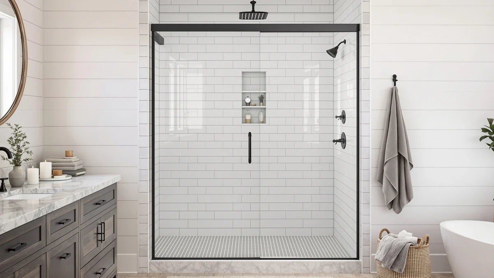

Best Thing to Clean Shower Doors with: Complete Guide (2026)
Prices and picks verified as of September 2026. Independent, reader-supported reviews.


Things to Know Before You Buy
- Soap scum and hard water stains need different formulas, so match the cleaner to the actual buildup on your door.
- Acid-based hard water removers work faster on heavy mineral deposits but need more rinsing and ventilation than daily sprays.
- A squeegee used after every shower prevents more buildup than any single cleaner removes.
- Water-repellent coatings reduce how often you need to deep clean, but they wear off and need periodic reapplication.
The best thing to clean shower doors with depends on what's actually built up on the glass: soap scum calls for a degreasing spray, while hard water stains need a formula built to dissolve mineral deposits. Reaching for a generic all-purpose cleaner on either problem usually just smears the residue around instead of lifting it.
Manufacturers sell dozens of shower glass cleaners, but the differences mostly come down to how they treat mineral scale versus soap residue, how strong the formula is, and how much rinsing and ventilation they require. We compared the ingredients, application method, and reviewer feedback across the leading options to sort out which ones actually address hard water buildup and which ones are better suited to routine soap scum maintenance.
This guide walks through the categories of shower door cleaners, how to match a product to your water and glass type, the mistakes that waste a good cleaner's effectiveness, and the maintenance routine that keeps a door looking clean between deep cleans. If you just want our picks, jump to the Our Top Picks section below.
What You Need to Know
Grime on a shower door usually falls into two categories, and each one calls for a different formula. Soap scum builds up from the fatty acids in bar soap and body wash reacting with minerals in your water, leaving a hazy film that regular glass cleaner often smears instead of lifting. Hard water deposits are mineral scale, mostly calcium and magnesium, that stays behind after water evaporates and slowly etches into the glass if you let it sit.
The best thing to clean shower doors with matches the problem you actually have. A degreasing spray cuts soap scum fast but does little against mineral scale, while an acidic or non-acid hard water remover dissolves calcium deposits but is wasted on plain soap residue. Check your water hardness before you buy: if you're on a municipal supply with a softener, soap scum is probably your main enemy; if you have well water or live somewhere with hard tap water, mineral buildup will dominate.
Ingredient strength matters too. Products range from mild, near-neutral pH sprays safe for daily use to stronger acid-based formulas meant for occasional deep cleans. Reviewers consistently note that the strongest cleaners work faster on years-old buildup but need more rinsing and ventilation, since a closed bathroom fills with fumes quickly. Read the label before your first use so you know whether the product is safe on tinted glass, coated glass, or nearby metal hardware, because some acidic formulas can dull anodized finishes.
Types and Categories
Shower door cleaners split into a handful of practical categories once you look past the marketing. Hard water stain removers are the largest group, usually acid-based or non-acid formulas built around citric acid, phosphoric acid, or mineral-dissolving compounds that break calcium and lime deposits down at a chemical level. Paste-style hard water removers, like the mint-scented option from Uncle Todd's, apply thicker and cling to vertical glass longer than a spray, which helps on stains that have had months to set in.
Daily soap scum sprays are gentler, degreasing formulas meant for a quick wipe after every shower rather than a deep clean. They rarely touch mineral deposits on their own, but paired with a squeegee they keep new buildup from forming in the first place. Rain-X's shower door cleaner falls into this category and also doubles as surface prep before applying a water repellent.
Water-repellent treatments are a separate category entirely: rather than cleaning existing grime, they coat the glass so water beads up and slides off instead of drying into spots. Owners report that a repellent coating extends the gap between deep cleans from days to weeks, though it needs periodic reapplication as it wears off.
A smaller category covers natural or low-chemical options, mostly diluted white vinegar or citric acid solutions mixed at home. They work slower than commercial formulas but skip the stronger fumes, which matters in a small bathroom with limited airflow. Whichever category you land on, none of these substitute for a squeegee habit, which does more to prevent buildup than any single cleaner.
How to Choose
Start with your water. Hard water leaves mineral spots within days, so if you're on well water or live in a region with high mineral content, prioritize a dedicated hard water stain remover over a general glass cleaner. A water hardness test strip from a hardware store settles the question in under a minute if you're not sure.
Check what the glass itself can handle. Frameless doors with a factory anti-fog or water-repellent coating can be damaged by strong acids, so read the manufacturer's care instructions before you reach for the harshest bottle on the shelf. Tinted or low-iron glass is usually fine with standard cleaners, but etched or textured glass traps residue in the grooves and often needs a paste formula you can work into the pattern with a brush.
Think about how often you're willing to clean. A squeegee and a mild spray used after every shower keeps soap scum from ever building into a real problem, which means you can skip the stronger, more expensive stain removers entirely. If you'd rather clean less often, choose an acid-based remover and accept a monthly deep-clean session instead of a daily wipe-down.
Fumes and ventilation matter more than most buyers expect. Stronger acid formulas and even some non-acid removers release a sharp smell in an enclosed bathroom, so check for a bathroom fan or a window you can open before buying the most aggressive option. If ventilation is limited, a milder or paste-based cleaner that you rinse quickly is the safer choice.
Finally, weigh the applicator. A trigger spray covers a large door fast but can drip and pool at the base, while a paste with a dedicated applicator pad, like GlasWeld's ProClean, gives you more control on vertical glass and around hardware. For textured or corner-heavy frameless doors, that extra control usually beats speed.
Common Mistakes to Avoid
The most common mistake is reaching for an abrasive sponge or scouring pad on glass that's already etched. Scrubbing hard mineral deposits with anything rough deepens the scratches instead of removing them, and once glass is etched, no cleaner reverses it. Stick to a soft microfiber cloth or the applicator pad that ships with the product.
Mixing cleaning products is another frequent error. Combining an acid-based hard water remover with bleach or an ammonia-based glass cleaner produces toxic fumes in a small, poorly ventilated bathroom. Use one product at a time and rinse the glass completely before switching to a different formula.
Letting cleaner dry on the glass instead of rinsing it off defeats the purpose. Most hard water removers need to sit for a few minutes to dissolve mineral deposits, but leaving them to air-dry just adds a new film on top of the old one. Wipe and rinse within the time the label specifies.
Skipping a spot test is a mistake on tinted, coated, or low-iron glass. Acidic formulas can dull certain coatings, and you won't know until you've treated the whole door. Test an inconspicuous corner first.
Last, ignoring the squeegee is the biggest long-term error. Even the best cleaner only resets the glass to zero. Without a 30-second squeegee pass after every shower, hard water spots and soap scum start rebuilding within days.
Care and Maintenance
A daily squeegee pass takes less time than most people expect and prevents the majority of buildup a cleaner would otherwise need to remove. Run it top to bottom right after your last shower of the day while the glass is still wet, then wipe the bottom track with a towel so standing water doesn't sit against the seal.
Once a week, follow the squeegee with a light wipe-down using a mild spray or a diluted vinegar solution, focusing on the corners and door track where soap scum collects fastest. This step catches the residue a squeegee alone leaves behind, especially around hinges and handles.
Plan on a deeper clean with a dedicated hard water stain remover every four to six weeks if you have hard water, or every two to three months if your water is softened. Apply the product, let it sit for the time the label recommends, then rinse thoroughly and dry the glass with a clean cloth to avoid new spotting from the rinse water itself.
If you use a water-repellent coating, reapply it on the schedule the manufacturer lists, usually every one to three months depending on shower frequency. Owners report that skipping reapplication is the main reason a repellent coating stops working sooner than expected. Store all cleaning products upright and away from kids, since several of the stronger formulas are corrosive concentrates rather than diluted sprays.
Our Top Picks
These three options cover the range most households need: a strong all-purpose hard water remover, a lower-cost spray for regular soap scum maintenance, and a non-acid formula for households wary of harsher chemicals.

Editor's Pick
Brite & Clean® (Bright &
Best overall pick for dissolving stubborn hard water stains without scratching glass or leaving fumes behind.
$16.95
Check Price on Amazon
Best Value
Rain-X 630035 X-Treme Clean Shower
A budget-friendly spray that handles everyday soap scum and doubles as prep for a water-repellent coating.
$9.97
Check Price on Amazon
Premium Choice
GlasWeld ProClean Hard Water Stain
A non-acid formula with an applicator pad for households dealing with heavy mineral buildup and etching risk.
$29.95
Check Price on AmazonFrequently Asked Questions
What is the best thing to clean shower doors with?
The best thing to clean shower doors with is a hard water stain remover if your main problem is mineral buildup, or a degreasing soap scum spray if the glass just looks hazy from soap residue. Most households end up using both: a mild spray for weekly maintenance and a stronger remover like Brite & Clean's hard water formula for periodic deep cleans.
Can I use vinegar to clean shower doors?
Yes, diluted white vinegar dissolves light hard water deposits and works as a low-cost alternative to commercial removers, though it acts slower on heavy buildup and carries a stronger smell during application. Spray it on, let it sit for several minutes, then wipe and rinse the same way you would a commercial cleaner.
How often should I clean glass shower doors?
Squeegee the glass after every shower and follow up with a light spray wipe-down once a week to prevent buildup from forming. Reserve a dedicated hard water stain remover for a deeper clean every four to six weeks if your water is hard, or every two to three months if it's softened.
Do hard water stain removers damage shower glass?
Most non-acid formulas, like GlasWeld's ProClean, are designed to be safe for daily glass surfaces, but stronger acid-based removers can dull certain coatings or tinted finishes if left on too long. Spot test an inconspicuous corner first and rinse within the time the label recommends.
Is a water-repellent coating worth it for shower doors?
A water-repellent coating like Rain-X's shower door treatment makes water bead and slide off instead of drying into spots, which stretches the time between deep cleans. It needs reapplication every one to three months depending on shower frequency, so factor that upkeep into whether it's worth it for your routine.
Verdict
The best thing to clean shower doors with comes down to matching the formula to the buildup you actually have rather than grabbing whatever glass cleaner is under the sink. For most households dealing with mineral spots, a dedicated hard water stain remover like Brite & Clean's biodegradable formula handles the job without scratching the glass or leaving strong fumes behind, which is why it's our top pick. If your water is soft and soap scum is the bigger issue, a lighter spray such as Rain-X's X-Treme Clean is cheaper and faster for weekly maintenance. Households wary of acidic formulas can lean on GlasWeld's non-acid ProClean instead, since it dissolves scale without the etching risk of stronger acids.
Whichever cleaner you choose, treat it as one part of a routine rather than a one-time fix. A squeegee after every shower, a weekly wipe-down, and a scheduled deep clean will keep the glass looking new far longer than any single bottle can on its own.